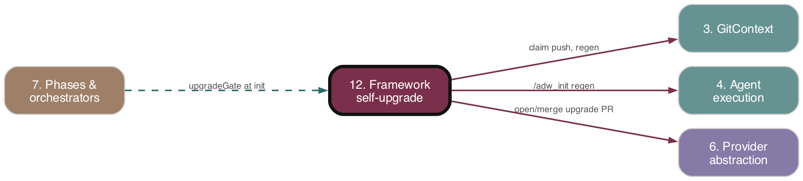

Framework self-upgrade
As-is reference. Ground truth: source code.

Purpose
Keeps every registered target repo's .adw/ configuration in sync with the ADW framework. A content hash of the framework's init inputs is compared against each target's stored .adw-version; on mismatch a single orchestrator is elected (via the GitHub branch namespace) to regenerate .adw/ by running /adw_init and open (and usually auto-merge) a PR. Also covers the initial /adw_init bootstrap that classifies a repo's stack and generates .adw/.
Responsibilities
- Compute a stable SHA256 "framework version" hash over declared
hashInputs:files (hashComputer). - Read/write the target repo's root
.adw-versionstamp (adwVersion). - Parse
.github/adw.ymlpolicy (hitl,unitTests) (adwYmlConfig). - Gate
initializeWorkflow()on hash match; on mismatch, elect winner/loser and park the triggering issue (upgradeGate). - Provide the atomic claim primitive: empty nonce commit pushed (no
--force) toadw-upgrade-<hash>— push success = winner, rejection = loser (upgradeClaim). - Drive the upgrade end-to-end: checkout claim branch, run
/adw_init, validate regen, write.adw-version, commit, push, open PR, gated auto-merge, failure-cap escalation (adwUpgrade.tsx). - Own the six
adw:*labels and the pure label-classification read-side (labelManager). - The
/adw_initslash command: stack classification,.adw/file generation, vocabulary template materialization.
Key Files
| Path | Role |
|---|---|
adws/core/hashComputer.ts |
SHA256 over hashInputs: files from adw_init.md frontmatter; sorted, order-invariant; CLI entrypoint |
| --- | --- |
adws/core/adwVersion.ts |
Read/write <worktree>/.adw-version (absent/empty → null) |
| --- | --- |
adws/core/adwYmlConfig.ts |
Parse .github/adw.yml → { hitl, unitTests }; template + writeAdwYmlTemplateIfAbsent |
| --- | --- |
adws/core/upgradeClaim.ts |
Atomic winner/loser election via detached empty-nonce commit pushed to claim branch; isPushRejectionError |
| --- | --- |
adws/core/upgradeFailureCap.ts |
Count bot-authored UPGRADE_FAILURE_SIGNATURE comments for cap escalation |
| --- | --- |
adws/phases/upgradeGate.ts |
Init-time gate: hash compare → claim → park (winner spawns orchestrator, loser attaches dependency) |
| --- | --- |
adws/adwUpgrade.tsx |
The upgrade orchestrator (8-step regen flow + escalation) |
| --- | --- |
adws/phases/workflowInit.ts (~L276–301) |
runUpgradeGate call site (target-repos only; process.exit(0) on park) |
| --- | --- |
adws/phases/worktreeSetup.ts |
copyAdwInitCommandToWorktree, verifyAdwRegen, REQUIRED_ADW_FILES |
| --- | --- |
adws/github/labelManager.ts |
adw:* label definitions, ensureAdwLabelsExist, applyLabel, pure readAdwLabels |
| --- | --- |
.claude/commands/adw_init.md |
/adw_init spec: hashInputs: frontmatter + .adw/ generation + stack classification |
| --- | --- |
adws/triggers/webhookGatekeeper.ts (~L85–94) |
Routes adw:upgrade issues directly to adwUpgrade.tsx; spawnDetached |
Behavior & Flows
Hash: computeFrameworkHash(root) reads adw_init.md, parses hashInputs: (currently adw_init.md, document.md, vocabulary.md.template), reads each file's bytes in lexicographic path order, returns SHA256 hex. Because adw_init.md lists itself, any edit to it changes the hash — propagating upgrades to all targets.
Upgrade gate (init-time): Runs only for target repos. shouldTriggerUpgrade = storedVersion !== currentHash (null .adw-version → always upgrade). On match → { action: 'proceed' }. On mismatch → claimUpgrade(hash, repoInfo):
- Winner: create tracking issue ADW framework upgrade <hash12>, apply adw:upgrade, spawnDetached adwUpgrade.tsx, park triggering issue (insert - #<upg> under ## Blocked by/Dependencies, best-effort board move to Todo).
- Loser: find existing upgrade issue (from claim result or findOpenUpgradeIssue), park with dependency; if no issue found yet (race) park without body edit.
The claim must run against the target repo's branch namespace, so buildDefaultUpgradeGateDeps pins baseRepoPath to the worktree (not framework process.cwd()).
Atomic claim: defaultPushClaimBranch fetches default branch, adds a detached worktree at origin/<default>, commits --allow-empty with a random nonce, pushes HEAD:refs/heads/adw-upgrade-<hash> without --force. Success → winner; rejection (matched against REJECTION_PATTERNS) → loser. Nonce guarantees the second pusher gets a true non-fast-forward (no identical-SHA "up to date" false win). Temp worktree cleaned up in finally.
adwUpgrade orchestrator (8 steps): Runs under runWithRawOrchestratorLifecycle (lock→heartbeat→run→cleanup); does NOT call initializeWorkflow. Activates target-repo App auth, sets up workspace, builds gitCtx. executeUpgrade: (1) entry gate — if adw:blocked present, return escalated; (2) compute hash; (3) derive branch; idempotency guard — if claim branch already has a PR (and not wontfix), return pr_already_exists; failure-cap — if bot failure comments ≥ MAX_FAILURES, apply adw:blocked, Slack alert, escalate; (4) ensureWorktree + reconcileWorktreeToRemote (fetch + reset --hard origin/<branch>); (5) copy adw_init.md (gitignored), run /adw_init via runClaudeAgentWithCommand (sonnet); on LLM failure post UPGRADE_FAILURE_SIGNATURE comment; (6) verifyAdwRegen (6 .adw/ files non-empty + vocabulary.md); (7) writeAdwVersion, commit (excluding copied adw_init.md), push — non-fast-forward → park as claim_lost; (8) createPullRequest (Closes #<n>); read .github/adw.yml — hitl: true leaves PR open + comments; else best-effort mergePR (failure non-fatal, comment posted). Re-dispatch is self-healing: cron/webhook routes adw:upgrade issues back to adwUpgrade.tsx each tick; a claim with no PR is rebuilt.
/adw_init bootstrap: Detects language/framework/package-manager from manifests, generates the six .adw/*.md files, detects scenario tool (Playwright/Cypress/Cucumber, default Cucumber), copies vocabulary.md.template to features/regression/, and classifies stack (browser-test-equipped / CLI-only / fallback) to fill the observability-surfaces block.
Data Structures
UpgradeClaimResult={ won: true; branch }|{ won: false; existingIssueNumber; existingBranch }.UpgradeGateOutcome={ action: 'proceed' }|{ action: 'parked'; role: 'winner'|'loser'; upgradeIssueNumber; branch }.UpgradeRunResult={ outcome: 'completed'|'failed'|'escalated'; reason; prUrl? }.AdwYmlConfig={ hitl: boolean; unitTests: boolean }(defaultsfalse/true).IssueCommentRecord={ body; author };AdwLabelReading={ optOut; classification; conflict }..adw-version: plain hex SHA256 + trailing newline. Claim branch:adw-upgrade-<hash>.- Labels:
adw:chore|bug|feature|pr_review(classification),adw:upgrade,adw:none,adw:unverified,adw:blocked.
Public Interface
computeFrameworkHash(root, deps?) → string;ADW_INIT_RELATIVE_PATH.readAdwVersion(worktree) → string|null;writeAdwVersion(worktree, hash).readAdwYmlConfig(worktree) → AdwYmlConfig;parseAdwYml;writeAdwYmlTemplateIfAbsent;ADW_YML_TEMPLATE.claimUpgradeOrFindExisting(hash, repoInfo, deps?);buildClaimBranchName(hash);isPushRejectionError;buildDefaultUpgradeClaimDeps(baseRepoPath?).runUpgradeGate(params, deps);shouldTriggerUpgrade;addDependencyToBody;buildDefaultUpgradeGateDeps(repoId, worktree).executeUpgrade(...)+build*Comment/build*PrBody/Titlehelpers;adwUpgrade.tsxCLI:<issueNumber> [adw-id] [--target-repo owner/repo] [--clone-url <url>].ensureAdwLabelsExist,applyLabel,readAdwLabels,issueTypeToAdwLabel; label-name constants.verifyAdwRegen,copyAdwInitCommandToWorktree,REQUIRED_ADW_FILES;countUpgradeFailureComments,UPGRADE_FAILURE_SIGNATURE.
Dependencies
- Upstream (depends on):
- Agent execution (4):
runClaudeAgentWithCommandruns/adw_init. - Provider abstraction (6):
createGitHubCodeHost/createRepoContext,RepoIdentifier,BoardStatus,createPullRequest,moveToStatus. - GitContext (3):
gitContextFor,ensureWorktree,commitChanges,pushBranch,fetchAndResetToRemote, label/issue ops. - State & ADW ID (2):
generateAdwId, orchestrator state via raw lifecycle lock. - Config & Environment (1):
parseTargetRepoArgs,ensureTargetRepoWorkspace,activateGitHubAppAuth, logs dir. - Cost telemetry (13): via raw orchestrator lifecycle / agent run.
- Downstream (depended on by):
- Phases & orchestrators (7):
workflowInitcallsrunUpgradeGate, parks/exits before any workflow comment. - Triggers (10):
webhookGatekeeperroutesadw:upgradeissues toadwUpgrade.tsx. - Auto-merge/HITL + resilience (11):
.github/adw.yml hitlgates auto-merge of the upgrade PR;adw:blockedescalation; Slack.
Interactions
| Other subsystem | Direction | What is exchanged |
|---|---|---|
| 7 Phases & orchestrators | inbound | workflowInit invokes the gate; parked → process.exit(0) |
| --- | --- | --- |
| 10 Triggers | inbound | spawnDetached('bunx tsx adws/adwUpgrade.tsx ...') for adw:upgrade issues |
| --- | --- | --- |
| 4 Agent execution | outbound | runs /adw_init slash command (sonnet) in the upgrade worktree |
| --- | --- | --- |
| 3 GitContext | outbound | worktree create/reset, commit, push, branch claim, label/issue ops |
| --- | --- | --- |
| 6 Provider abstraction | outbound | open PR, merge PR, move issue board status |
| --- | --- | --- |
| 11 Auto-merge / HITL | outbound | adw.yml hitl decides auto-merge vs human review; failure-cap → adw:blocked + Slack |
| --- | --- | --- |
| 8 BDD / scenario | outbound | /adw_init writes scenarios.md + features/regression/vocabulary.md |
| --- | --- | --- |
| 14 Docs & living-docs | outbound | /adw_init writes conditional_docs.md; document.md is a hashInputs: file |
PRD Divergences
- PRD
specs/prd/adw-init-hash-and-label-classification.mddescribes hash storage at repo root and label-based classification — implementation matches (.adw-versionand.github/adw.ymloutside.adw/;adw:*labels inlabelManager). - Implementation extends beyond the PRD: failure-cap escalation (
adw:blocked,MAX_FAILURES),hitl/unitTestspolicy in.github/adw.yml,wontfix-PR rebuild escape hatch, and stale-worktreereconcileWorktreeToRemoteare not part of the orienting PRD's scope. No contradictions observed.